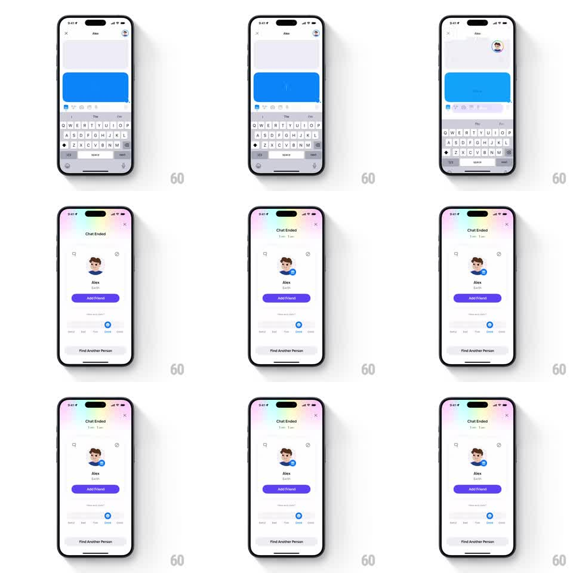

Media
Frame-by-frame

Rebuild this interaction 1:1: Honk's chat-to-feedback morph - when the chat ends, the input box region morphs with springy physics into a pastel-gradient "Chat Ended" feedback card, revealing the friend's profile, Add Friend button, rating row, and Find Another Person in a staggered cascade.

Rebuild this interaction 1:1: Honk's chat-to-feedback morph - when the chat ends, the input box region morphs with springy physics into a pastel-gradient "Chat Ended" feedback card, revealing the friend's profile, Add Friend button, rating row, and Find Another Person in a staggered cascade. ## Integration Integration: stack-agnostic spec - springs given as stiffness/damping, timed motions as duration + curve; map every value to your framework and animation library of choice. ## Scene Starting state: active chat with Alex, blue bubble, keyboard up. End state: a full "Chat Ended" card over a soft pastel rainbow gradient background - duration line, friend's avatar, "Alex", "Earth", purple "Add Friend" button, "How was Alex?" rating row (Awful...Great), and a "Find Another Person" button at the bottom. ## Motion spec Pattern: input-to-card morph with staggered reveals. - The keyboard slides down (250ms); the blue bubble lifts and fades (200ms) as the background washes into the pastel gradient (300ms). - The input bar's frame expands from the bottom into the full card (height + width springs, stiffness ~300, damping ~24, 400ms) - the card literally grows out of the input region. - Content reveals in stagger: "Chat Ended" + duration (150ms delay, fade+translateY 10pt), avatar pops (scale 0.6 -> 1, spring ~340/16), name and location fade (200ms), Add Friend slides up (250ms), the rating row slides up (250ms, 80ms later), Find Another Person last (250ms, 80ms later). Total cascade ~900ms. - The close X fades in top-right with the title. ## Calibration - The morph origin must read as the input box - keep its width and bottom alignment at frame one. - The pastel gradient is a soft diagonal rainbow wash, low saturation. ## Reduced motion The chat crossfades to the completed card (300ms); no stagger. ## Don't miss - Every element's entrance is translateY-up + fade, same direction, tight 80ms stagger rhythm. - The rating row arrives empty (no preselected stop).